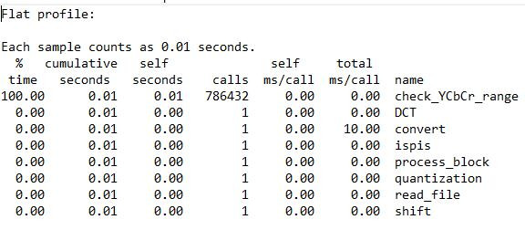

dal se nekome javlja ova graska kad pokusa koristiti ove IPP biblioteke?
Just_some_name bas sam htio postat o tome, meni se isto desi, probao sam u linker postavke visual studia dodat i include i env direktorije iz ipp-a, ali nije pomoglo
Just_some_name Vjv ti je zato što imaš razmake u nazivu fajla, znači probaj ovo https://social.msdn.microsoft.com/Forums/en-US/d0ceca96-d310-4952-a4d8-2b69c60054cc/visual-studio-error-lnk1104-can-not-open-file?forum=visualstudiogeneral
Just_some_name imao sam isti error. Rijesio sam tako da sam u properties od projekta podesio platform na x64 i default linking method za IPP. I za debug isto pripazi da je x64.
netko_tamo
Ja sam mislio da je možda do nekih permissiona ali ni “run as admin” nije pomoglo
Izgleda da se traži neki kolega da nam kompajlira kodove 🤣
FICHEKK Kad napravim ovako, dobijem u profile.txt: no time accumulated, i sva seconds polja su mi 0. Napravio sam sve isto, jedino sam kod kompaljiranja trebao dodati -lm na kraj, inače se žalio na korištenje funkcija iz math.h.
profile.txt
no time accumulated
seconds
-lm
math.h
a_ko_si_ti Prekratko mi je trajalo izvodenje. Koliko dobijete u cumulative seconds?
cumulative seconds
a_ko_si_ti Ja sam pokretao za 1 blok samo i isto bi mi bile sve nule. Sad sam pokrenuo da prodje kroz sve blokove i onda dobijem za kvantizaciju i dct da traju nekih pola sekunde za ovaj self seconds EDIT: Odnosno dct traje nekih pola sekunde dok je kvantizacija 0.01
M̵̧̩͑̀͝î̶͍̉ć̴̝̾́̀o̶̺̟̣͂̽ nemam nikakve razmake u nazivu fajla tak da nije to
netko_tamo Nije ti isto u program filesu?
Šta ako nemamo 5 funkcija za izdvojiti, tipa ja sve u mainu i jos jednoj f-ji radim?
Audaces Ja sam imao isto tako, samo sam stavio varijable kao globalne i dijelove koda koji se odnose na neki dio zadatka sam copy-pasteao u pripadne void funkcije i samo sam globalne varijable mijenjao. 5 min posla sveukupno
Je li potrebno taj oneAPI base toolkit instalirati od 26.7 GB??
Klokan samo vtune profiler i ipp library, ostalo ne treba
Jel itko drugi dobio ovako da mu main uzima 100% iz nekog razloga?
Audaces da za slučaj kada ne prođeš preko cijele slike nego samo za jedan blok
tonkec 
Je li bi mi mogao objasniti je li ovo zadovoljavajuci izlaz koji oni ocekuju zad 3.dz, naravno ovo jos nije formatirano. Vidim da si spominjao “ da za slučaj kada ne prođeš preko cijele slike nego samo za jedan blok”, ali što nije prva zadaća bila da se i radi samo o jednom bloku. Je li mi moramo promijenit da radi na svim blokovima ? Vidim da spominju 5 funkcija dok meni program sam po sebi ima 8 funkcija. Ili sam ja nesto jednostavno krivo shvatio iz prethodnih postova ?
Je li iko uspio instalirat IPP lib na Linuxu?
a_ko_si_ti ja se mučim i na Windowsu 😢
Harweyy
Klokan Prepravio sam da radi nad svim blokovima, ali i dalje pozivam kao kolega samo 6. blok u cmd-u, je li ovo sad “prihvatljiva” statistika kakvu oni očekuju? Naravno još formatirat po njihovim zeljama